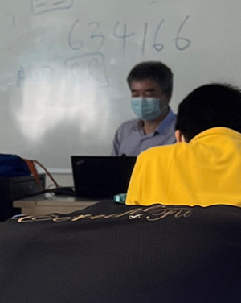
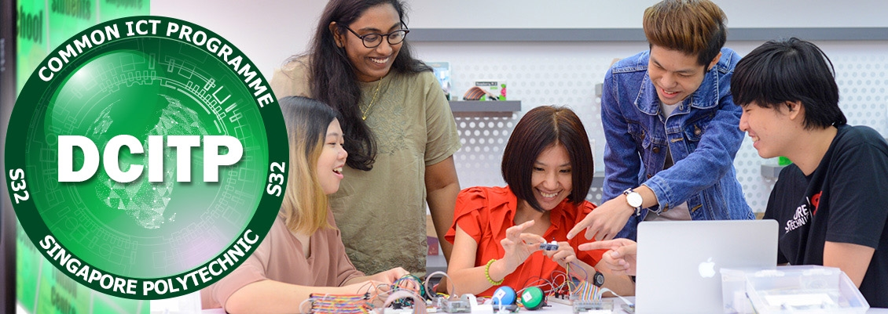
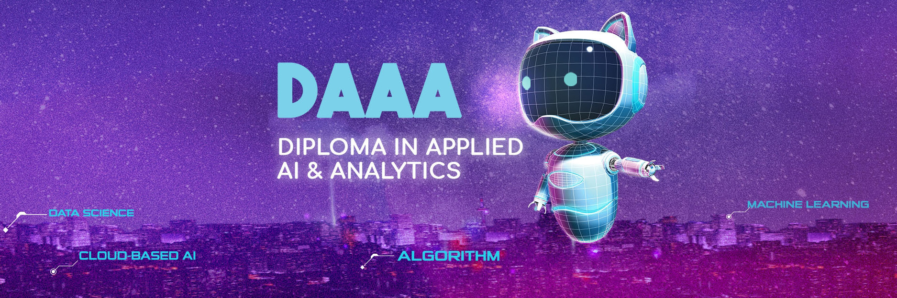
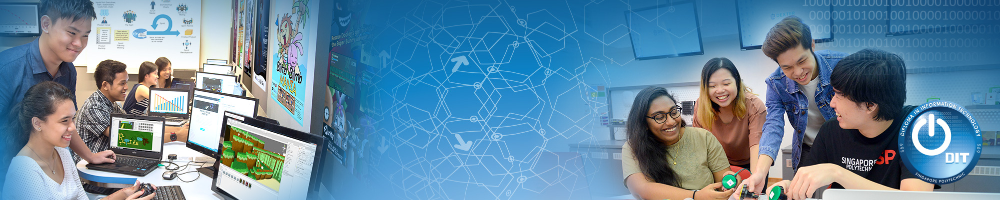
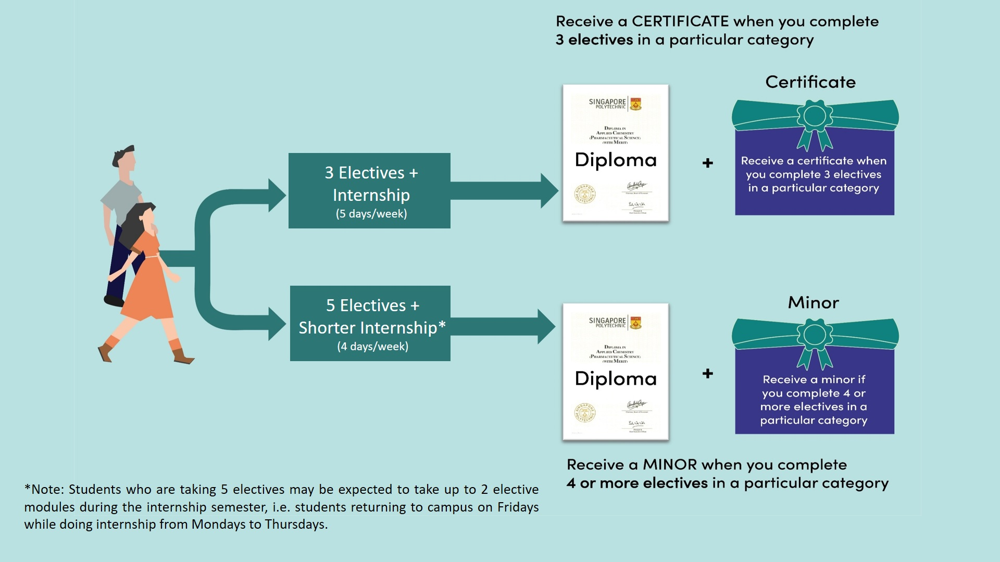

SP's experience
Fresher Orientation
{kind=link}
When I first come to Singapore Polytechnic, all the staffs and seniors are warmly welcome and eager to help us. For our SoC class, brother Isaiah, Wei Yu and Wei Ji Kwok are guidliners. They helped us to register our calculators,introduced to our personal lecturer and made us to play ice-breaking games to make more friendly between classmates. They also show us foodcourts and secretly tell us which foodcourt is the best. We are all introduced by all clubs in SoC and persuade to join them.The whole experience is joyful and interesting.
{kind=link}
{kind=link}
First week in SP
First week in Singapore Polytechnic give me kinda mixing feeling of exciting and frightening. I met with lots of friends, have my own study group and project groups. At first, I was afraid of teachers but teachers way of communicating us make me feel ease. Now I am enjoying my course and trying to push my limits and go out of comfort zone.

Sport for Life
Another new experience in Singapore polytechnic is Sport For Life(SFL). In my country, there is no complementary sport modeule for every student. We need to configure ourself by joining student sport clubs or external sport course. In SP, they make complementary sport modules and everyone need to join. The schedule have both for physical sport activities and mental wellness class for students. I think SP aim to develop not only literacy smart students but also physically and mentally fit students. There are six types of modules: badminton, tennis, street soccer, strength and conditioning, yoga and chokeball. I got tennis modeule. At first, I think we play just for fun but SP provide us professional couch to teach us.
{kind=link}
Food courts
In Singapore Polytechnic, there are 6 foodcourts and serve cuisines from all over the world. They have cuisines from western, chinese, korean, japanese and so on and prices are maiximum $5.5 as they made the foods are affordable for students. I usually go to foodcourt 4 and korean or western food as tastes are very good and prices are cheap.
{kind=link}
Co-curriculum Activities
Singapore polytechnic offers us more than 100 of Co-curriculum Activities(CCA). They made CCA fair after Fresher orientation day to introduce every single CCA club and students can easily find what they are interested and want to join.
My Course
| Modules | Lecturers | Explanation | Total Hours | Credit Units |
|---|---|---|---|---|
| Communicating for Project (Proposal) Effectiveness | Kenneth Tan | This module aims to equip students with the skills to articulate and communicate ideas persuasively and to work effectively in teams. They will be taught to pitch ideas or concepts and to write proposals to an intended audience. | 30 | 2 |
| Critical and Analytical Thinking (CAT) | Sim Soo Li | This module aims to equip students with skills in critical and analytical thinking, which includes the ability to evaluate different perspectives, articulate a point of view and support it with relevant and credible evidence. The module also provides students with opportunities to practise information literacy, and critical and analytical thinking through the exploration of contemporary local and global issues. | 30 | 2 |
| Mathematics | Tan Lian Kuan | Equips students with knowledge in mathematics and analytical skills to solve problems related to infocomm technology. Topics include matrices, linear transformation, number systems, set theory, logic, Boolean algebra, techniques of counting and probability. | 60 | 4 |
| Education and Career Guidance 1: Personal Development | Chee Seng Chong | This module aims to help you discover your strengths, values and interests. It also supports you in making informed educational and career choices to achieve your career aspirations. | 30 | 0 |
| Front-End Web Development | Edger Wang | Aims to equip students with the knowledge and skills in developing effective front-end web applications using Hypertext Markup Language (HTML) and Cascading Stylesheets (CSS). Students will learn to use front-end web development frameworks to further enhance their ability for rapid prototyping responsive web application. | 75 | 4 |
| Fundamentals of Programming | Chee Seng Chong | Aims to help students pick up a programming language and learn how to solve and automate tasks through programming. Students will be taught programming fundamentals such as variables, data types, operators, control structures, methods and data structures such as arrays. At the end of the module, students will be competent in using programming for problem solving. | 90 | 6 |
| Fundamentals of Computing | Ng Song Heng | This module aims to provide students with an understanding of computer networking concepts and hands-on sessions on with operating systems using Command-Line Interfaces. Students will be taught on the use of various UNIX commands / system tools for user management, software installation, network administration and configuration of services. These topics are essential and prerequisite to an Application Developer for building and deployment of a software system. | 60 | 5 |
Personal tutor
{kind=link}
Mr.Chong, our personal lecturer is a kind, helpful and friendly lecturer. He always take care of us specifically tell us jokes to make not to have lots stress. He always asked if teaching are fast or not and if there is something he can help. He always share his expreiences in IT jobs and evey field's advantages and weakness.
Courses
available
in SOC
Diploma in Infocomm Security Management
The threat has never been so real. The more we rely on the Internet to store and manage important information, the more we need to keep it safe from cybercriminals. Be a part of the elite force in keeping the Cyber World SAFE! Being a Diploma in Infocomm Security Management (DISM) student gives you the competitive edge for a boost in your future studies and career. You can look forward to an interesting curriculum that covers offensive attacks, defensive methods and investigative skills.
Find moreDiploma in Common IC Programmes
Are you passionate about Information Technology (IT) but undecided about which IT course to take? The Common ICT Programme (DCITP) is designed to help you make an informed choice. The DCITP is a semester long programme designed to give you a broad introduction to the Infocomm landscape and help you gain insights into the occupations and job roles, career pathways and employment opportunities in the various Infocomm sectors. The DCITP will also help you lay a strong foundation in programming and IT fundamentals.
Find moreDiploma in Applied AI & Analysis
Believe it or not, you interact with a form of AI (Artificial Intelligence) every day! From Siri to Google Home and online chatbots, data analytics and AI make it possible for devices and programmes to respond to us in an almost human-like manner. This is changing how we live, work and communicate. Soon, it will become an integral part of our daily lives. Are you interested to develop the next AI application that benefits our world?If your answer is yes, the Diploma in Applied AI & Analytics (DAAA) is perfect for you!
Find moreDiploma in Information Technology
 Information Technology (IT) is the driving force behind many digital transformations we see and use today, including the Smart Nation vision. In Singapore, there continues to be a strong demand for IT professionals in Software Development and User Experience (UX) design, and in Immersive Simulation Technologies such as Augmented and Virtual Reality. The Diploma in Information Technology (DIT) course is positioned to focus on Software & Applications development with three specialist tracks:- Software Development
- User Experience (UX)
- Immersive Simulation
Elective Modules
Singapore Polytechnic's (SP) Elective Framework is designed to provide our students with educational experiences aligned with SP's aspiration of developing self-directed, versatile and life-long learners.Elective provide students with learning opportunities to set and achieve, learning goals through self-exploration, shaping own learning paths and pursing their passions.
Find more